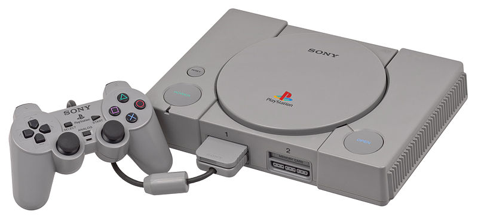

PlayStation[ps]

PlayStation
The original PlayStation was released on December 3 1994, & was the first of the ubiquitous PlayStation series of console and hand-held game devices. It has included successor consoles and upgrades including the Net Yaroze (a special black PlayStation with tools and instructions to program PlayStation games and applications), "PSone" (a smaller version of the original) and the PocketStation (a handheld which enhances PlayStation games and also acts as a memory card). It was part of the fifth generation of video game consoles competing against the Sega Saturn and the Nintendo 64. By December 2003, the PlayStation and PSone had shipped a combined total of 102.49 million units, eventually becoming the first video game console to sell 120 million units.

list of ps games types orderd by type along with download
links and descriptions.....